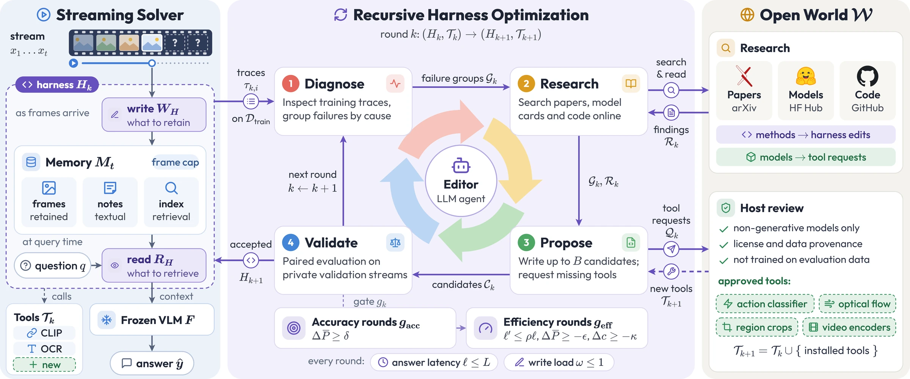

Stuck on a failure? Read the literature.
Closed-world editors repair a harness from what they already know. MORSE's can search, read, and ask for tools.
Diagnose. Research. Propose. Validate.
One turn of the loop, replayed from the editor's log: a recurring failure leads to a new tool.
Diagnose
Group the failures by cause.
Research
Search papers, model cards, code.
Propose
Write candidates. Request tools.
Validate
Keep what improves held-out streams.

25 rounds. First more accurate, then faster.
Every tested candidate of the Qwen3-VL-8B run. Below, drag through all 25 rounds.

The final memory mechanism, evolved over 25 rounds.
What the final harness holds at question time for three OVO-Bench questions, and what it sends to the frozen model. Click any item.

Accuracy across models and benchmarks.
Each group shares one frozen model. Pick a model and a benchmark.
Per-task numbers
† our reimplementation. On ODV-Bench (driving videos, unseen in development): 67.1%, against 62.6% for MemEvo and 58.6% for the model alone.
It builds over the run
| Harness | RT | BT | Overall |
|---|---|---|---|
| Seed | 78.4 | 52.8 | 67.4 |
| After round 3 | 80.0 | 61.3 | 72.0+4.6 |
| After accuracy rounds | 82.7 | 64.8 | 75.0+7.6 |
| Final | 82.4 | 65.3 | 75.1+7.7 |
Research and tools both matter
| Variant | RT | BT | Overall |
|---|---|---|---|
| Seed | 78.4 | 52.8 | 67.4 |
| No tool requests | 78.9 | 59.7 | 70.6+3.2 |
| No online research | 80.8 | 62.4 | 72.9+5.5 |
| MORSE | 82.4 | 65.3 | 75.1+7.7 |
It transfers to other models
| Model / method | RT | BT | Overall |
|---|---|---|---|
| LLaVA-OneVision-2-8B | 61.5 | 46.0 | 54.8 |
| + MemEvo† | 74.8 | 52.8 | 65.3+10.5 |
| + MORSE | 81.0 | 58.0 | 71.1+16.3 |
| Gemma-4-26B-A4B | 71.7 | 57.1 | 65.4 |
| + MemEvo† | 77.5 | 62.0 | 70.8+5.4 |
| + MORSE | 82.6 | 65.1 | 75.1+9.7 |
OVO-Bench. RT: real-time perception. BT: backward tracing.
0.30 s per answer, 6.0× faster than MemEvo.
Ask a question: each bar grows for as long as that system takes.
BibTeX
@article{zhang2026morse,
title = {MORSE: Optimizing Streaming Memory Design via Open-World Auto-Research},
author = {Zhang, Ce and Zhang, Jianshu and He, Jinxi and Yang, Xiyuan and Wang, Pan and Liu, Han and Sycara, Katia and Xie, Yaqi},
year = {2026}
}